The continued growth of large-scale high performance computing (HPC) systems is fueled by the two trends: continued integration of additional functionality onto system nodes, and the increased number of nodes (and components) in the systems. As a result, these large-scale systems are jeopardized by potentially increasing faults in hardware and software. Transient faults caused by high energy particle strikes, wear-out, etc. are becoming a critical contributor to in-field system failures. Without protected by efficient and effective fault tolerance mechanisms, HPC applications can generate incorrect execution outcome and even crash in presence of transient faults. This can lead to a huge financial loss or loss of lives in some safety-critical HPC applications. As high-performance computing systems scale in size and computational power, transient faults are becoming a critical contributor to failures in HPC applications.
There are many HPC applications that are safety-critical. These safety-critical applications cannot accept any form of failure that can lead to incorrect execution outcome to these applications. As an example of such safety-critical applications, the aircraft aviation application manages aircraft operations in real-time. Transient faults can cause a failure to aircraft aviation and this can further cause substantial safety risks such as aircraft crashes. Same aviation applications are also launched in spacecraft control systems and autonomous vehicles control systems. A crash in such aviation applications can take away lives and also cause significant financial loss. Another example of safety-critical applications could be the banking and stock trading applications. Banking and stock trading applications are usually run on a large-scale cluster to process a large amount of financial data in real-time. A failure because of transient faults to these applications can lead to a loss of millions of dollars. Note that all the proposed two examples are real-world examples.
News
Anzheng is going to present his thesis work in IPDPS PhD Forum. Good luck!
Anzheng received the IEEE TCPP travel award to attend IPDPS’19. Thank IEEE TCPP program.
A paper is accepted by IPDPS’19. Congratulations!
Our work published in SC’18 is highlighted by HPCwire in its “What’s new in HPC research”
A paper is accepted by SC’18. Congratulations!
A poster is accepted by SC’16 and the poster is nominated as Best Poster Finalist
Background
Fault Model
Transient Faults
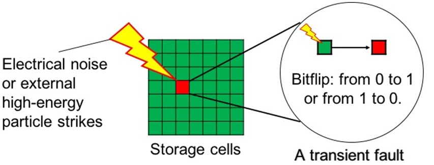
We use random fault injection to mimic the effect of real soft errors in the application
When an error is injected, we define three possible error manifestations
Success
SDC (Silent Data Corruption)
Interruption
Fault Masking
Fault masking can happen at the application level and hardware level
The application level fault masking happens because of application inherent semantics and program constructs
The hardware level fault masking happens because a fault does not corrupt the precise semantics of hardware
The focus of our fault tolerance modeling is the application level fault masking
Particularly, we examining numerous fault masking events at the application-level
To count the number of fault masking events that happens to individual data objects
To characterize error resilience by summarizing the reason that leads to fault masking events
Publications
Luanzheng Guo and Dong Li. MOARD: Modeling Application Resilience to Transient Faults on Data Objects. IEEE International Parallel & Distributed Processing Symposium (IPDPS’19), 5/20/2019, Rio.(PDF)
Luanzheng Guo, Dong Li, Ignacio Laguna, and Martin Schulz. FlipTracker: Understanding Natural Error Resilience in HPC Applications. ACM/IEEE International Conference for High Performance Computing, Networking, Storage and Analysis (SC’18), 11/13/2018, Dallas. (PDF)
Luanzheng Guo, Ignacio Laguna, Dong Li. Poster: Which Fault Injection Tool Should We Use for GPU programs? LLNL Summer Poster Symposium, 8/2018, Livermore. .(PDF)
Luanzheng Guo, Ignacio Laguna, Dong Li. Poster: Understanding the Resilience of Fundamental Data Types. LLNL Summer Poster Symposium, 8/2017, Livermore. .(PDF)
Luanzheng Guo, Jing Liang, and Dong Li. Poster: Understanding Ineffectiveness of Application-Level Fault Injection. Poster in ACM/IEEE International Conference for High Performance Computing, Networking, Storage and Analysis (SC’16), 11/15/2016. Best Poster Finalist .(PDF)
Challenges
Previous studies have shown many applications that have natural resilience
Examples of such applications are algebraic multi-grid solvers (AMG), Conjugate Gradient (CG) solvers, Monte Carlo simulations, and machine learning algorithms, such as clustering and deep-learning neural networks
Previous work attribute the natural resilience to statistical and iterative structures of application
What is the fundamental reason that these application have natural resilience?
Many common application-level fault tolerance mechanisms focus on data objects such as Algorithm-Based Fault Tolerance (ABFT)
The current common practice Random Fault Injection (RFI) cannot quantify application resilience on certain data objects because of its randomness
RFI lacks data semantics and information on how and where errors are tolerated
Team
To solve the problem, we have the following team members:
Luanzheng Guo, UC Merced
Dong Li, UC Merced
Ignacio Laguna, LLNL
Martin Schulz, TUM
Inefficiency of Random Fault Injection
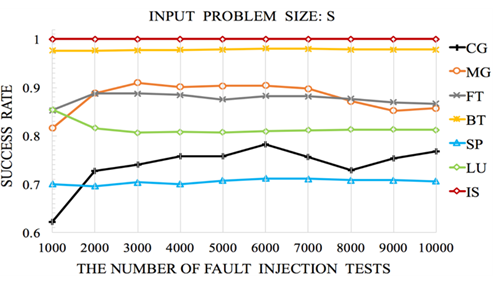
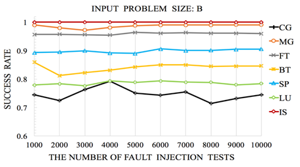
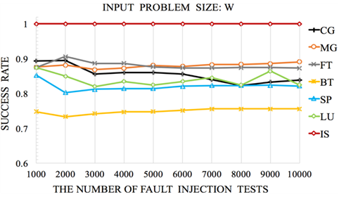
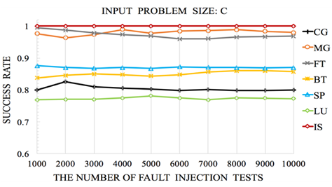
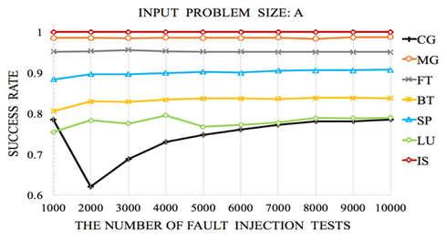
Observation 1:
For BT and SP, the fault injection results vary across input problem sizes. There is more than 25% variance.
Observation 2:
The fault injection result for CG and MG vary across different numbers of fault injection tests, while the fault injection results for other benchmarks are relatively stable.
Observation 3:
Based on the results of 1000 fault injection tests, we find CG is more reliable than MG. But based on the results of 2000, we make an opposite conclusion.
Observations
The fault injection results of some applications are sensitive to the number of fault injection tests, while the fault injection results of some
The application resilience depends on the input problem size
FlipTracker
Resilience computation patterns
Dead Corrupted Locations (DCL): In this pattern, corrupted locations are not used anymore
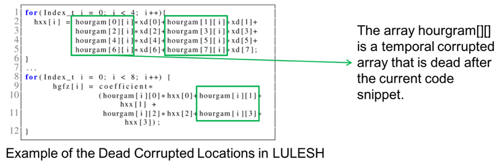
Repeated Additions (RA):
In this pattern, the value of a corrupted location is repeatedly added by other correct values
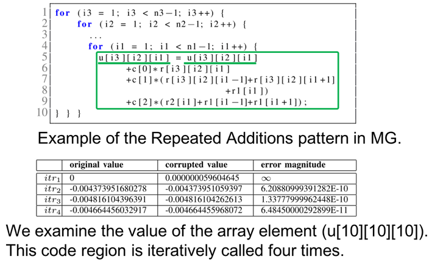
Conditional Statements, Shifting, Data Truncation, Data Overwriting
Case studies
Use case 1: Resilience-Aware Application Design
We apply resilience patterns to the CG benchmark, aiming to improve its resilience
The goal of this use case is to show that resilience computation patterns can guide application designs towards natural resilience
We successfully apply three patterns, dead corrupted locations (DCL), data overwriting, and truncation, to the CG benchmark
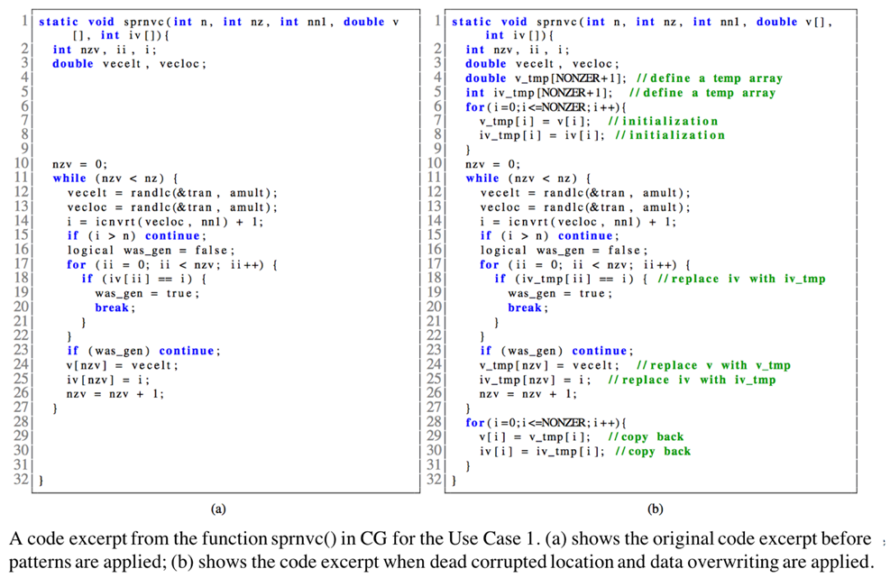
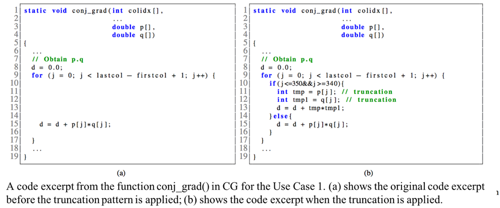
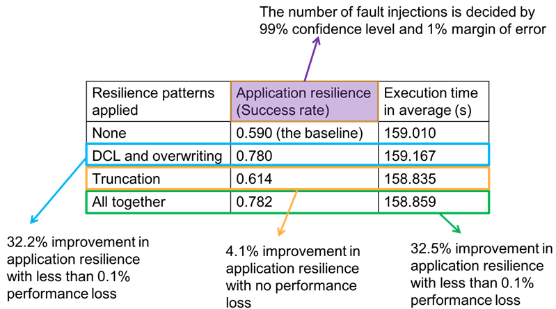
Use case 2: Predicting Application Resilience
We build a regression model to predict the success of the error manifestation using resilience patterns
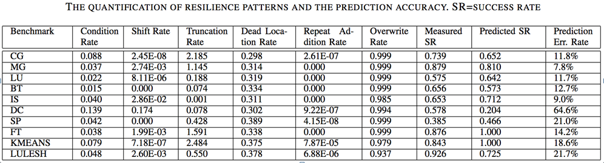
MOARD
To quantify application resilience to transient faults on a data object, we introduce a metric, aDVF
The key is to quantify how often error masking happens to data objects. The definition of aDVF:
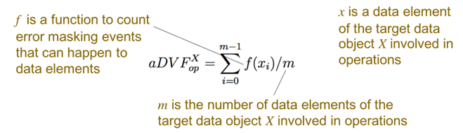
Model Validation
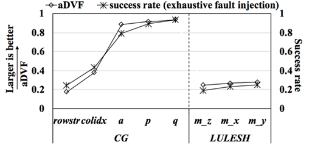
Observation:
aDVF and exhaustive fault injection rank the data objects in the same order
Conclusion:
aDVF correctly reasons application resilience to transient faults on data objects
Comparing aDVF Calculation with RFI
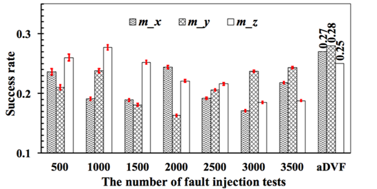
The RFI results with the margin of error (the confidence level 95%) and aDVF results. The results are for three data objects (m x, m y, and m z) from LULESH
The calculation of aDVF is deterministic while the results of RFI is sensitive to the number of fault injection tests
Conclusion:
We can deterministically rank data objects in terms of application resilience to transient faults on the data objects by counting aDVF
Use Case 1: Studying xe in Particle Filter
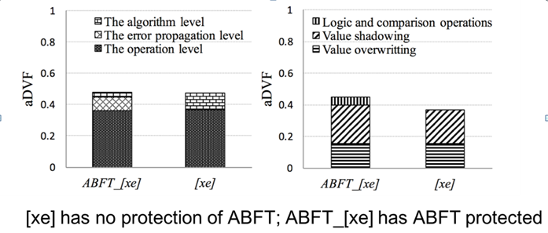
Observation:
Using ABFT does not improve much application resilience on the data object xe
Conclusions:
ABFT is not needed for xe
aDVF can direct error tolerance designs
Resources
Below we provide several useful resources with additional information about the experiment:
This work is performed under the auspices of the U.S. Department of Energy by Lawrence Livermore National Laboratory under contract DEAC52-07NA27344 and subcontract B629135. This work is partially supported by U.S. National Science Foundation (CNS-1617967, CCF-1553645 and CCF- 1718194).
Copyright@ 2015-2019 UC Merced and LLNL
Last updated: